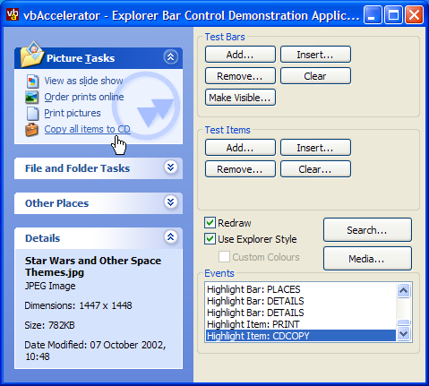
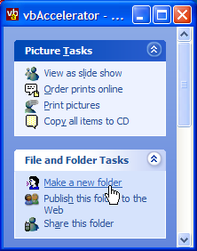
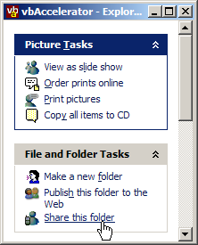
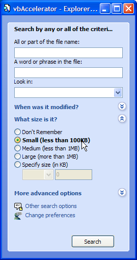
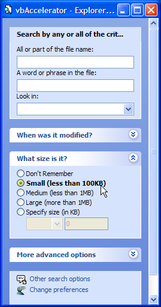
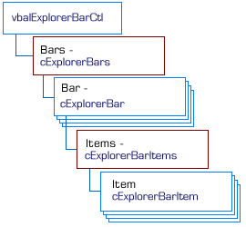

VB5 Explorer Bar Control (63K)
VB5 Explorer Bar Control (63K)
 VB5 ExplorerBar Control Demonstration (83K)
VB5 ExplorerBar Control Demonstration (83K)
 VB5 ExplorerBar Control Full Source (221K)
VB5 ExplorerBar Control Full Source (221K)
 VB6 Explorer Bar Control Binary (64K)
VB6 Explorer Bar Control Binary (64K)
 VB6 Explorer Bar Control Demonstration (81K)
VB6 Explorer Bar Control Demonstration (81K)
 VB6 Explorer Bar Control Full Source (221K)
VB6 Explorer Bar Control Full Source (221K)
 Bugs: 7 / 16
Bugs: 7 / 16
 Issues: 3 / 6
Issues: 3 / 6
 Questions: 0 / 0
Questions: 0 / 0
 15 Nov 2003
15 Nov 2003
Added Watermark and Title Icon properties.
Titlebars in Search mode can now wrap onto more than one line.
Control can now be resized horizontally or vertically at runtime and items are wrapped correctly.
Bug fixes: font property, Title background colour properties, MSVBVM50.DLL dependency, large number of items truncated, key navigation. See the BugTrak for full details.
 vbAccelerator COM/VB Support Type Library (vbaCOM.Tlb)
vbAccelerator COM/VB Support Type Library (vbaCOM.Tlb)
 Subclassing Without The Crashes
Subclassing Without The Crashes
 vbAccelerator ImageList Control and Class v2.0
vbAccelerator ImageList Control and Class v2.0
 Reading Data from Local or External Library Resources
Reading Data from Local or External Library Resources
 Ole Guid and interface definitions (OleGuids.Tlb)
Ole Guid and interface definitions (OleGuids.Tlb)

vbAccelerator Explorer Bar Control
Create highly customisable XP Style Explorer user interfaces on all versions of Windows
The vbAccelerator Explorer Bar control is a new control entirely written in VB which provides a user interface like the one in Windows Explorer under XP. You can use it to create handy lists of shortcuts and informational panels, or you can incorporate controls into the panels to provide flexible and configurable complex user interface panels. The code allows you to use the inbuilt XP styles when available or to draw using an emulation otherwise.
About the Demonstration
The control demonstration includes three forms which demonstrate all the aspects of using the control. The main form shows how to create an Explorer-style shortcut link bar, and demonstrates adding and removing items as well as using emulated mode and customising the colours. The Search demonstration form shows how to create an Explorer style Search interface complete with different search modes and customisation. Finally, the Media Search form demonstrates how you might use the control to create a P2P search interface.
Using the Control
The Explorer bar itself has three modes of drawing, depending on which Windows version you're using and the setting of the UseExplorerStyle flag. When the UseExplorerStyle flag is False, which is the default, the control will either draw using the current XP theme's details, or will draw using the XP Window Classic style if no theme is in effect or you're running on an earlier version of Windows. If the UseExplorerStyle is set to True then the control draws using an emulated XP theme based on the current system colours. You can also then customise the colours with your own choices for a specific appearance.
These different modes are illustrated below:
Explorer Bar With XP Theme
Explorer Bar in Classic Mode

Explorer Bar in Emulated Mode with Custom Colours
You can also decide whether each Bar in the control has its own distinct, separated box (the default), or whether all of the bars appear within the same area with no spaces between them, like the XP Explorer Search mode using the Style property.
|  Style = eSearchStyle |  Style = eDefaultStyle |
Once the mode has been set, you can start working with the bars and items in the control. cExplorerBar objects represent groupings of items in the control. These groupings normally have a title bar and can be expanded and collapsed by the user, although this behaviour can be customised. cExplorerBarItem objects represent items within the bars of the control. Items can have one of three different styles: they can either be links, in which case they appear underlined and can be clicked by the user, captions in which case they purely display textual information or control place holders, in which case the item can hold any control.
The control has a full object model to work with the bars and items, as shown in the diagram below:
Explorer Bar Control Object Model
Working With Bars
Bars are controlled through the control's Bars property. This property returns a cExplorerBars collection object which allows you to manipulate the bars in the control. These methods and properties are available through the collection:
- Add
This method allows you to add or insert a new bar to the control. To insert a bar, specify the Index property for the bar to insert prior to, otherwise the bar will be added to the end of the existing bar collection. In all cases you should specify a Key for the bar, otherwise one will be generated by the control which you cannot subsequently change. Finally, you can also specify the Title of the bar at this point. A reference to the newly added bar is returned.
- Item (default)
Gets a reference to the Bar in the collection with the specified 1-based index or key.
- Exists
Returns True if a Bar exists in the collection with the specified 1-based index or key.
- Remove
Removes the bar with the specified 1-based index or key.
- Clear
Clears all bars from the collection.
Once a bar has been added, you can manipulate the properties of the bar itself. The properties affecting a bar's appearance are listed below:
- IsSpecial
Set this if the bar should be highlighted using the title bar colours or not. In Windows Explorer a special bar represents a special folder location such as "My Pictures" or "My Music".
- Title
Gets/sets the title of this bar.
- IconIndex
Gets/sets the 0-based index of an icon from the BarTitleImageList to draw for this bar. Set to -1 to tell the control that no icon needs be drawn.
- ToolTipText
Gets/sets the text that will be displayed in a tooltip when the user hovers over the title of this bar, if any.
- TitleBackColorLight, TitleBackColorDark
If the control is running in Emulated mode (UseExplorerStyle = False) then you can customise the colours of the title bar. The title bar is drawn as a horizontal gradient from the Dark to the Light colour. You should avoid having different colours for more than one type of bar (i.e. all bars with the same IsSpecial setting should have the same colours. Set to -1 if you want the default colour.
- BackColor
Gets/sets the background colour of the bar. Set to -1 if you want to use the default colour. The control's DefaultPanelColor property returns the default colour for both special and normal bars.
- WatermarkPicture, WatermarkMode, WaterMarkHAlign, WaterMarkVAlign
Get and set properties to manipulate a Watermark image shown behind the items within the bar. By default, the control uses the eWaterMarkColourise mode. In this mode, the picture provided for the Watermark is colourised so that the top-left pixel of the picture is converted to the BackColor of the control, and other pixels are lightened or darkened based on their relative luminance. eWaterMarkDirect allows you to display the Watermark image directly without manipulation. The other two properties allow you to modify the positioning of the watermark within the bar.
- TitleFont
Gets/sets the font used to draw the title of the bar. Set to Nothing if you want to use the default font (which is the System's Icon font)
- TitleForeColor, TitleForeColorOver
Gets/sets the colours used to draw the text in the title of the bar. The Over variant specifies the colour when the mouse is over the title. Set either property to -1 to use the default colours.
- CanExpand
Gets/sets whether the bar can be expanded and collapsed or not. The default value is True. When set to False the bar is permanently expanded.
- State
Gets/sets whether the bar is expanded or collapsed.
- Key
Gets this bar's key. Read-only.
- Index
Get/sets the 1-based order of this bar in the control.
- ItemData, Tag
Properties for associating long values and strings with the bar.
Working With Items
Items are controlled through a cExplorerBar object's Items property. This property returns a cExplorerBarItems collection object which allows you to manipulate the items in the bar using the same methods as for a bar (described earlier). The only difference is that when you add an item you can also optionally specify the icon and the style (ItemType) of the item.
Properties and methods for working with an item in a bar are as follows:
- ItemType
Gets/set the type of the item. An item can be one of the following:
- eItemLink
The default. An item which highlights like a Hyperlink whilst the mouse is over, and can be clicked.
- eItemControlPlaceHolder
A textual label. This type cannot be highlighted or clicked.
- eItemText
A placeholder for another ActiveX control. The control is set using the Control property.
- eItemLink
- Text
Gets/sets the text to show for this item. Ignored if the item's ItemType = eItemControlPlaceHolder.
- IconIndex
Gets/sets the 0-based index of the icon to draw for this control. Set to -1 to tell the control that no icon needs be drawn.
- ToolTipText
Gets/sets the text that will be displayed in a tooltip when the user hovers over this item. Ignored if the item's ItemType = eItemControlPlaceHolder.
- Bold
Gets/sets whether the text for this item will be displayed in bold or not.
- SpacingAfter
Gets/sets the spacing after this item in the bar, specified in pixels.
- Control
Gets/sets the control associated with this item. Should only be used for items with ItemType = eItemControlPlaceHolder. If the control you set is a VB PictureBox, then the control will automatically change its BackColor to match the background colour of this item. Note that the background colour can change, in which case the control will raise an event. See the section on Events below.
- TextColor, TextColorOver
Gets/sets the colours used to draw the text for this item. The Over variant specifies the colour when the mouse is over the item and the item has ItemType = eItemLink. Set either property to -1 to use the default colours.
- CanClick
Gets/sets whether a click event will be raised when the item is clicked (only valid if the item has ItemType = eItemLink).
- ItemData, Tag
Properties for associating long values and strings with the bar.
Events
The control raises events for bar and item clicks, mouse-over highlighting and when the system colour settings change:
- BarClick
Raised when a bar in the control is clicked. This event is raised after the control has completed expanding or collapsing, so you can use the bar's State property to determine which state it is in.
- BarRightClick
Raised when the user right-clicks a bar in the control.
- ItemClick
Raised when an item in the control is clicked.
- ItemRightClick
Raised when the user right-clicks an item in the control.
- SettingChange
Raised when any of the global system settings (such as colours) change. You can use this event to recolour any picture boxes in the control.
Notes
Limitations and Requirements
Please note the limitations and requirements for the control:
- The control will fail if run under Windows 95 or NT4 unless UseExplorerStyle is set True.
- Using the control in emulated mode with non-true colour systems is not recommended.
- The Tab order for a control which contains child controls is incorrect. This issue is being researched. Any ideas about how to fix it would be most appreciated!
Other Notes
The Redraw property allows you to make changes to the content of the control without the control redrawing after each change. This can greatly speed up removing and adding items to the control since each change does not cause the control to redraw.
Implementing the Control
The control presented here has the same fundamental window structure as the Windows version of the control. However, when I commenced on this project I believed that the control was drawn using the XP Theme API. It turns out this isn't entirely the case. The Media Explorer Bar uses this API to do some of its drawing (its probably that the Search Bar does too, because this appears in both Explorer and IE). However, the bar that is shown in Explorer when neither Search or Folders mode is in effect is not drawn using this API.
Where Does Windows Keep The Graphics?
A little look at the XP Theme directory reveals why this is. It appears that Explorer's bar, whilst related to the other Explorer Bars, was a last minute hack to the theme and hence the rendering is not directly part of the XP Visual Style theme stuff. If you look at your XP themes directory (typically found at Windows\Resources\Themes\Luna) you'll see that the Luna directory has a subdirectory called Shell. This directory in turn contains three directories, each containing a DLLs for one of the theme's different colour settings (at least, this is true for the default Windows XP theme setup, if you have a custom theme then you may have something different. If this causes problems with the control then please write and tell me the problem plus how I can reproduce your setup.)
Looking at these DLLs using the Bitmap Extractor Utility shows that these are the actual source of all images displayed in the Explorer bar. This is a pain. It means that the Explorer Bar's rendering is not accessible through UxTheme.DLL calls, and so some reverse engineering is required to draw the whole thing.
The first thing you can do (if you are running XP) is to find where the relevant ShellStyle.DLL resource utility can be found. This is done by interrogating the UxTheme.DLL API for the current theme and colour set:
Private Declare Function OpenThemeData Lib "uxtheme.dll" _
(ByVal hWnd As Long, ByVal pszClassList As Long) As Long
Private Declare Function CloseThemeData Lib "uxtheme.dll" _
(ByVal hTheme As Long) As Long
Private Declare Function GetCurrentThemeName Lib "uxtheme.dll" ( _
ByVal pszThemeFileName As Long, _
ByVal dwMaxNameChars As Long, _
ByVal pszColorBuff As Long, _
ByVal cchMaxColorChars As Long, _
ByVal pszSizeBuff As Long, _
ByVal cchMaxSizeChars As Long _
) As Long
...
hTheme = OpenThemeData(UserControl.hWnd, StrPtr("ExplorerBar"))
If Not (hTheme = 0) Then
ReDim bThemeFile(0 To 260 * 2) As Byte
lPtrThemeFile = VarPtr(bThemeFile(0))
ReDim bColorName(0 To 260 * 2) As Byte
lPtrColorName = VarPtr(bColorName(0))
hRes = GetCurrentThemeName(lPtrThemeFile, 260, lPtrColorName, 260, 0, 0)
sThemeFile = bThemeFile
iPos = InStr(sThemeFile, vbNullChar)
If (iPos > 1) Then sThemeFile = left(sThemeFile, iPos - 1)
sColorName = bColorName
iPos = InStr(sColorName, vbNullChar)
If (iPos > 1) Then sColorName = left(sColorName, iPos - 1)
sShellStyle = sThemeFile
For iPos = Len(sThemeFile) To 1 Step -1
If (Mid(sThemeFile, iPos, 1) = "\") Then
sShellStyle = left(sThemeFile, iPos)
Exit For
End If
Next iPos
sShellStyle = sShellStyle & "Shell\" & sColorName & "\shellstyle.dll"
...
CloseThemeData hThem
End If
Once that's done you can start loading the actual images themselves. ShellStyle itself turns out to include both 256 bit images for the title bars themselves and 32 bit images with an alpha channel for the expand and collapse button images. To ensure these are displayed correctly, the control uses the LR_CREATEDIBSECTION flag when calling LoadImage to read the images from the resource. See the Bitmap Extractor Utility and Reading Data from Local and External Resources articles for more details on how to do this.
The remainder of the code for rendering the Explorer Bar has to all be custom code, since there's no assistance from the UxTheme API to do this. Essentially this means watching what Explorer does under various theme and colour settings and best emulating what's there. This means that some of the colours do not entirely match the Explorer versions. But they are generally visually pleasing (IMHO) and you can always use the emulation mode with your own colours if you disagree. Note that under some XP themes there are some colours used in the Explorer Bar which theme with the bitmap used with the title bar: there is no API call to retreive these colours and the control can only use the system colour settings. This means that the background colours for the Silver theme look a little anaemic in emulated mode. Any suggestions as to how to repair this would be interesting.
Conclusion
Despite lack of co-operation from Windows and VB, this control implements an Explorer Bar which can be used on any OS to manage a series of links and/or controls in a neat graphical interface.